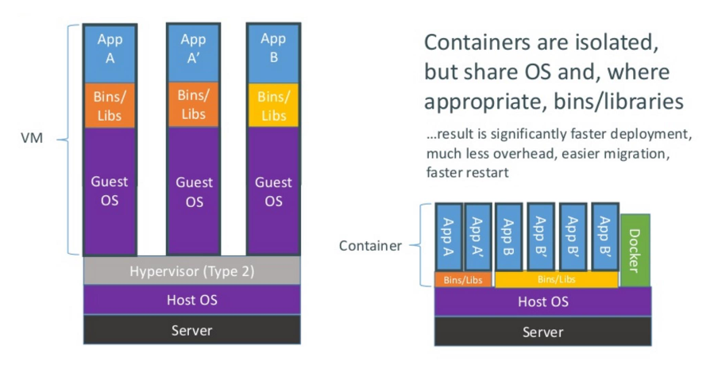
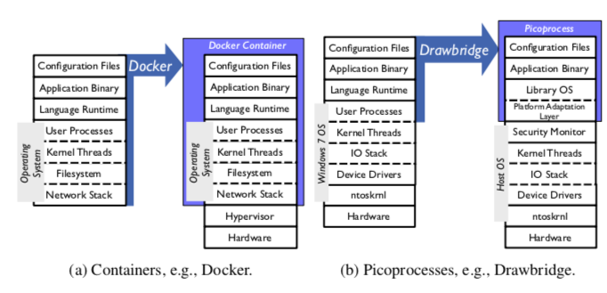
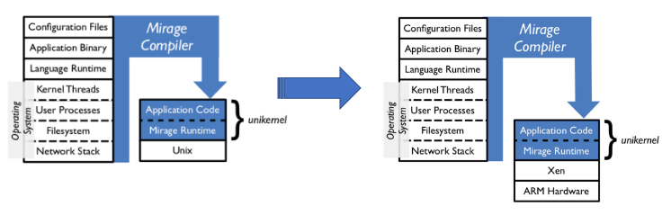
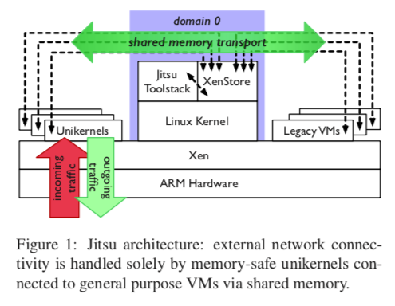

"Jitsu: Just-In-Time Summoning of Unikernels"
Problem
How to build a system that is able to securely manage multi-tenant networked applications on embedded infrastructure?
-
Goals:
- High density/scalability
- Fast boot
- Lightweight
- VM-level isolation
- "Embedded cloud"
Background
-
OS are traditionally designed to run on a wide range of hardware, and support a variety of applications. But no longer true!
- Hypervisors in the cloud provides virtual hardware abstractions
- Many modern applications are single purpose microservices
-
Container:
- Think of as a lightweight VM
- Separate process space, network interface
- Setuid/root access possible
- Share kernel with host (thus, no I/O emulation, VM overheads)
- chroot, cgroups
-
Pros:
- Achieves much of VM charter
- Separation of concerns: Dev (inside container), Ops (outside)
- Lightweight, good deployment unit
-
Cons:
- Limited compatibility
- Limited isolation
-
Container vs. VM:

-
Problem with layers in existing solution:
- Complex configuration management
- Duplication leads to inefficiency
- Image size leads to long boot time
- All the layer leads to large attack surface

-
Unikernels
-
Pros:
- Lightweight (fast, IoT-amenable)
- High consolidation ratios
- Small attack surface
- Type safety (safety in general)
- Minimize multi-RM pathologies
- Small binaries (host in git)
-
Cons:
- Increased pressure on (cloud) scheduler
- Threading
- Cross-domain communication
- Compatibility
-
Mirage Unikernel:
- OS is a collection of modules (libs) with types (API)
- Written in OCaml
- Compact enough to boot/respond to network traffic in real-time
-
System Design
-
Jitsu: Unikernels on demand
- Capture system dependencies in code/compile them away
- Swap system libraries to target different platforms
- Dev/Test on UNIX, deploy specializes to Xen

- Jitsu Architecture:

comments powered by Disqus